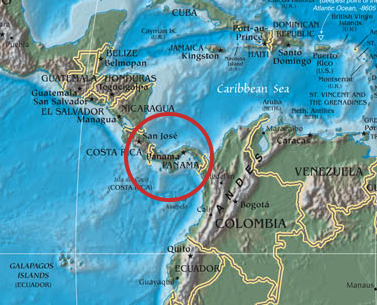

Senozoyik Zaman'ın ikinci periyodu olan Neojen, yerkürenin hem fiziksel hem de biyolojik açıdan modern çehresine kavuştuğu kritik bir evredir. Yaklaşık 20 milyon yıllık bu süreçte kıtalar bugünkü konumlarına yaklaşmış, iklim giderek soğumuş ve insanın en eski ataları Afrika sahnesinde ilk kez boy göstermiştir.
Kıtaların Kaynaşması ve Modern Biyota
• Coğrafi Birleşmeler: En önemli jeolojik olaylardan biri, Kuzey ve Güney Amerika'nın Panama Kıstağı ile birleşmesidir. Bu durum okyanus akıntılarını değiştirerek küresel soğumayı tetiklemiştir.
• Dağ Oluşumları: Hindistan'ın Asya ile çarpışması devam ederek Himalaya Dağları'nın yükselmesini sürdürmüştür.
• İnsansıların Ortaya Çıkışı: İnsanın atası olan ilk insansılar Afrika'da ortaya çıkmış ve ardından Avrasya'ya yayılmışlardır.
• İklim ve Bitki Örtüsü: Küresel iklimin serinlemesiyle tropik bitkiler yerini yaprak döken türlere bırakmış; geniş ormanların yerini alan meralar sayesinde otlayan memeliler çeşitlenmiştir.
• Deniz Seviyesi ve Buzullar: Kutuplardaki buzullar büyüyüp kalınlaşırken, düşen deniz seviyeleri kıtalar arasında yeni kara köprüleri (kıstaklar) oluşturmuştur.

Neojen döneminde Kuzey ve Güney Amerika'yı birbirine bağlayan Panama Kıstağı; bu birleşme küresel iklimi ve biyolojik göçleri kökten etkilemiştir.